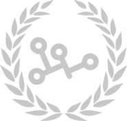
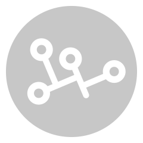

나무위키:대문
최근 수정 시각:
최근 수정 시각:
분류:나무위키
나무위키에 오신 것을 환영합니다!
다크는 회색이 아니라 검정입니다!
나무위키는 누구나 기여할 수 있는 위키입니다.
검증되지 않았거나 편향된 내용이 있을 수 있습니다.
나무위키에 처음 오셨나요?먼저 나무위키의 규정과 CCL 위반 등 자주 하는 실수, 도움말을 확인해 보세요. |
|
나무위키 게시판공지 · 그루터기 · 문의 · 신고 · 편집 요청 · 차단 소명/해제 요청 · 다중 계정 검사 · 토론 문의 · 개발 문의 |
|
권리침해 문의권리자의 임시조치 및 저작권 침해 관련 문의 방법이 권리침해 도움말에 설명되어 있습니다. |
|
중재 제도토론 중재 요청을 받고 있습니다. 게시판 에서 요청하실 수 있습니다. |
|
운영진 지원 |
나무위키 프로젝트 |
|
|---|---|
|  | 프로젝트에 참여해서 관련 문서에 기여의 손길을 보내주세요! |
최근 개설된 프로젝트가 없습니다. |
|
 나무위키의 규정 |
기본방침 (문서 관리 방침 · 토론 관리 방침 · 이용자 관리 방침 · 운영 관리 방침 /운영진 선출) · 편집지침 (일반 문서 · 특수 문서 · 특정 분야 (인문사회 · 과학기술 · 문화예술 · 창작물) · 등재 기준 · 표제어) |
나무위키의 도움말 |
FAQ · 도움말 (기능 · 편집 · 문법 (심화 · 수식 · 개발) · 토론 · 설정 · 소명 · 권리침해 · 자주 하는 실수 · 문서 삭제식 이동 · 더미) |
나무위키의 운영 |
관리자 · 중재자 · 역대 운영진 · 운영진 지원 · 운영 도움말 (관리 · 중재 · 권한) · 접근 제한 (문서 목록) · 운영회의 (시행규칙 · 안건 건의) · 운영진 임명 회의 /진행 중인 회의 · 봇 리스트 · 투명성 보고서 · 소급 적용 규정 일람 · 공지 목록 |
나무위키의 기능 |
분류 · 게시판 · 엔진 (업데이트) · 계정 · 통계 · 연습장 · 내 문서함 · 문서 작성 요청 |
나무위키의 분류 |
프로젝트 · 주요 페이지 링크 · 보존문서 · 파일 · 틀 · 템플릿 |
나무위키:편집지침/일반 문서 에서 외부 링크 관련 규정이 개정되었습니다. 변경 내용 보기
나무위키:기본방침/토론 관리 방침 에서 토론 진행 시 문서에 '틀:토론 중' 부착을 우선하도록 규정이 개정되었습니다. 변경 내용 보기
나무위키:기본방침/이용자 관리 방침 에서 봇 사용 승인의 취소에 관한 규정이 개정되었습니다. 변경 내용 보기

이 저작물은 CC BY-NC-SA 2.0 KR
에 따라 이용할 수 있습니다. (단, 라이선스가 명시된 일부 문서 및 삽화 제외)
기여하신 문서의 저작권은 각 기여자에게 있으며, 각 기여자는 기여하신 부분의 저작권을 갖습니다.
나무위키는 백과사전이 아니며 검증되지 않았거나, 편향적이거나, 잘못된 서술이 있을 수 있습니다.
나무위키는 위키위키입니다. 여러분이 직접 문서를 고칠 수 있으며, 다른 사람의 의견을 원할 경우 직접 토론을 발제할 수 있습니다.